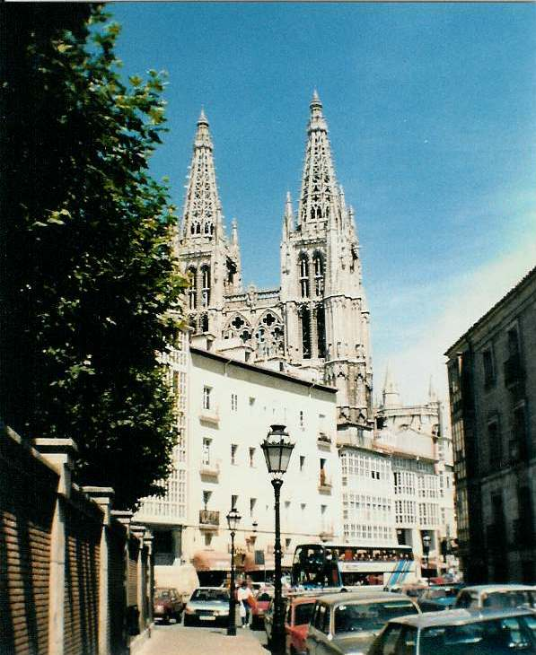

Inter Rail 1986 Day 3
Monday 25th August 1986
Woke up about 10.00am. We were all convinced too much wine had been drunk the night before. Lolling about continued until we eventually packed up and went to get breakfast at 11.00am.

Roger and I went to change some money. You can't get into or out of Spanish banks unless you ring a bell and wait for the door to be unlocked. Having paid up we left our bags in the beer/wine cellar whilst we went to get some food shopping done.
Found a Spar shop. Bought bread (baguette and brioches), pate, cheese, some other wonderfully liquidy cheese, Fanta and some expensive wine (35p a bottle).
Collected our bags and sat in a square/oblong on a park bench to eat a bit of brunch. There seemed to be lots of people just walking up and down aimlessly. Had to move benches when a man arrived to water the one we were using.
Strolled down to the station to make a reservation only to find that it was unnecessary. Wandered back up to the Cathedral. Had an ice-cream and bought some postcards. Sat in the sun and the shade writing the cards until the cathedral opened at 4.00pm.
A little man with an official armband waved at my legs i.e. shorts were out. Donned a skirt to check out the inside of the cathedral. It was very ornate with few stained glass windows but amazing freezes at the altar.
Spent a bit of time in the cathedral square, sat in an outside bar, had a couple of cold beers (60p for 33cl) and watched the world go by. The square seemed to be a major meeting point for both people and pigeons. Decided to stay in the bar and have our meal.
Ordered 4 different set meals. Eli and I had to swap because she hated fried eggs. I had the Spanish equivalent of bacon, eggs, chips and black pudding. Ordered a couple of carafes of wine and sat in the restaurant finishing off the postcards. All the wine made things go very silly.
Eventually mossied off to the train station. Had to guess the platform the train was coming on. After 20 minutes had elapsed from the train arrival date an announcement was made that the train was going to be quite late so we opened a bottle of wine to pass the time on the platform. The train eventually arrived about half past midnight.
It was virtually empty but we decided to share a compartment. We were too excited (or maybe pissed!) to sleep so stood in the corridor in bare feet and looked out of the open window at Spain passing by. At Venta de Baños a little man came by at about 1.15am and sold us cold cans of Skol lager for 67p each which we happily consumed.
We did eventually settle down to sleep. Jon was on the floor as he was too long for the seats. Roger and Eli were on the seats, whilst I was on the shelf which formed the roof of the corridor by our compartment. It was a bit too short by a couple of inches and there was a pipe running across at two thirds of the way down but I still got a relatively decent nights sleep.
The guard came in about 4.00am. Roger and I woke up and showed him our tickets but Jon and Eli were dead to the world so he just gave up on them.
{kind=link}
{kind=link}